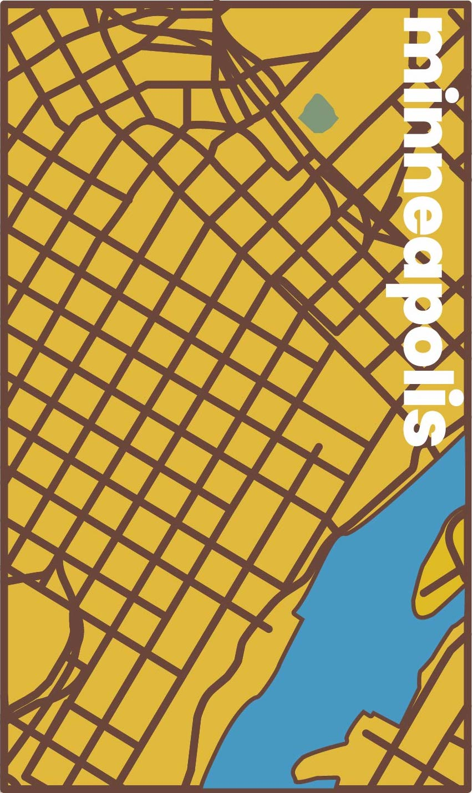
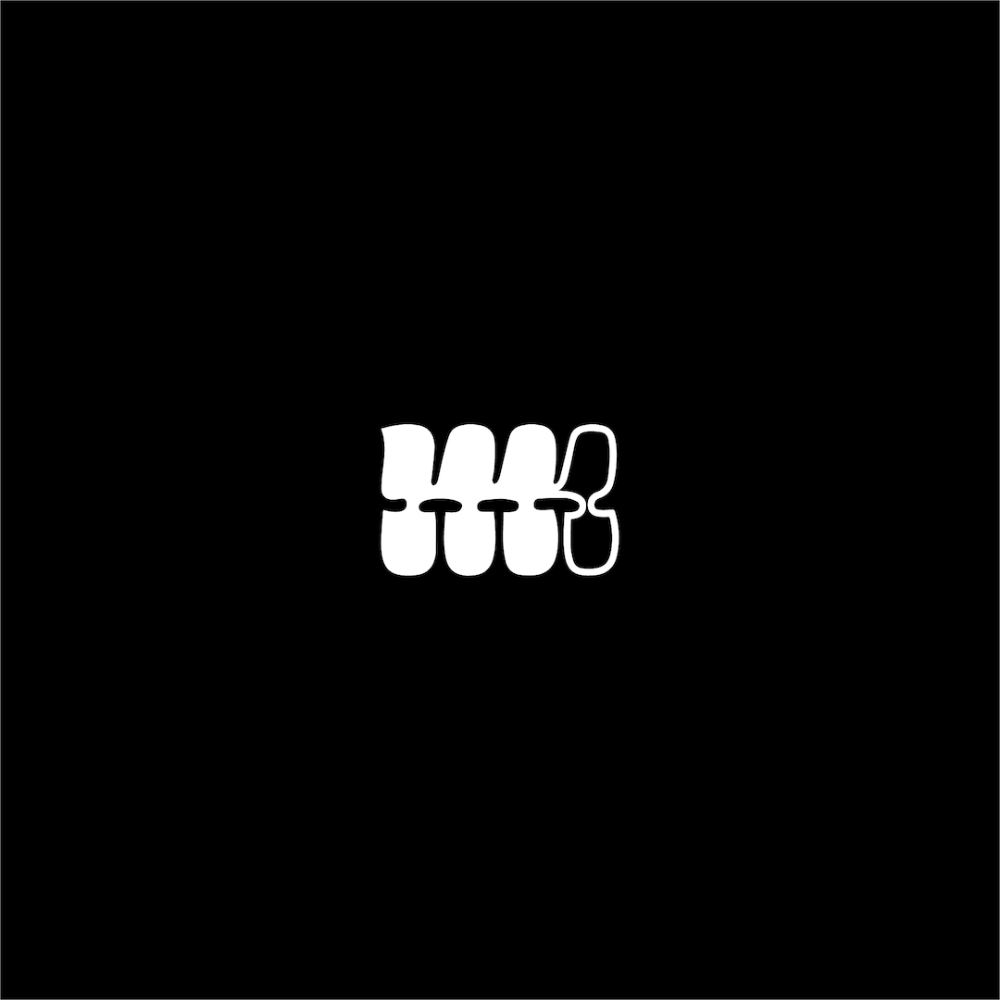
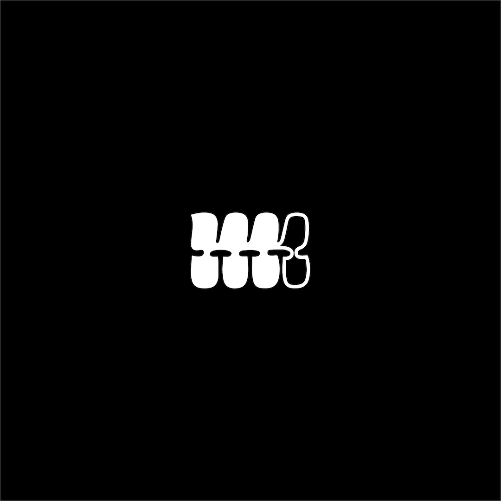
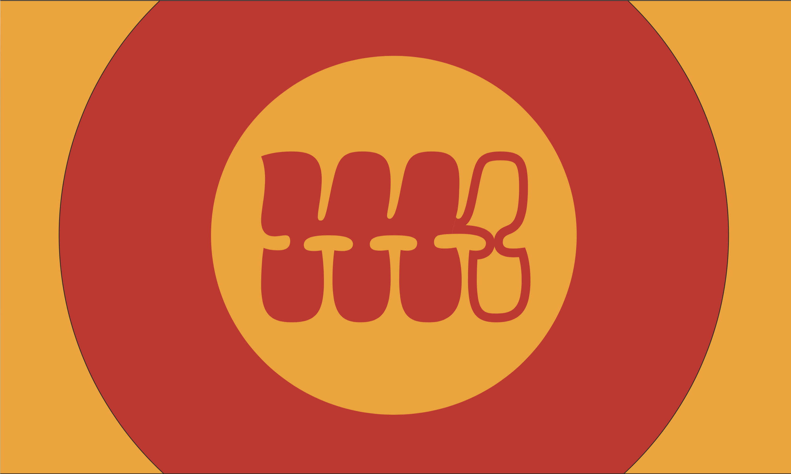
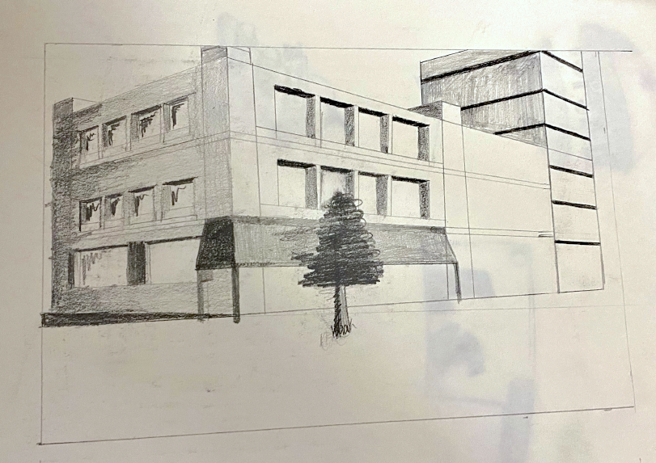
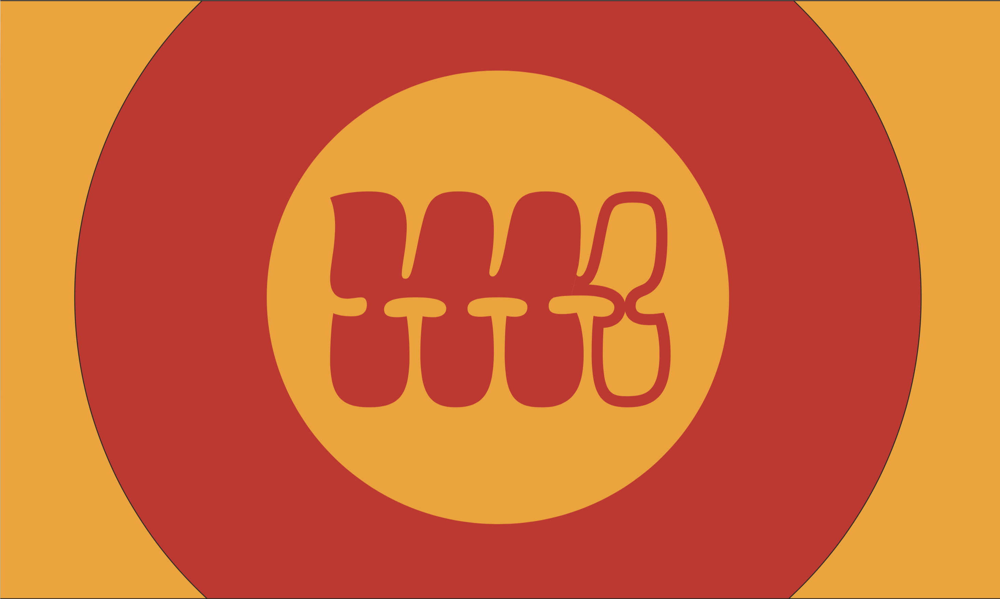
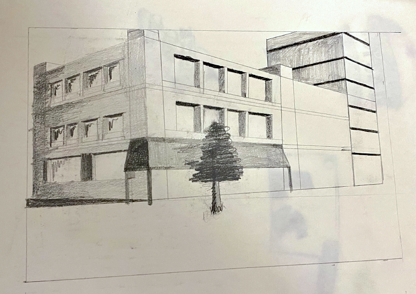
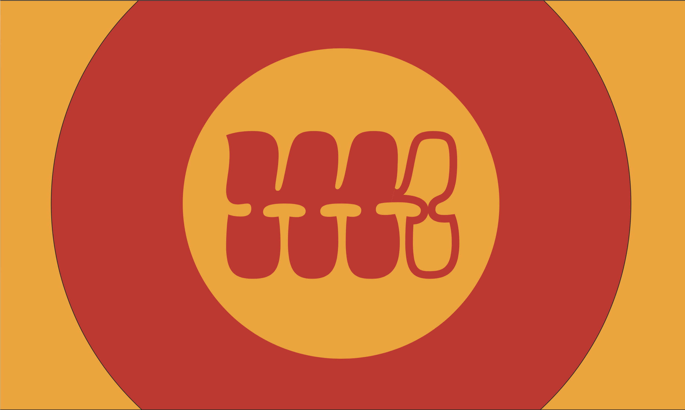
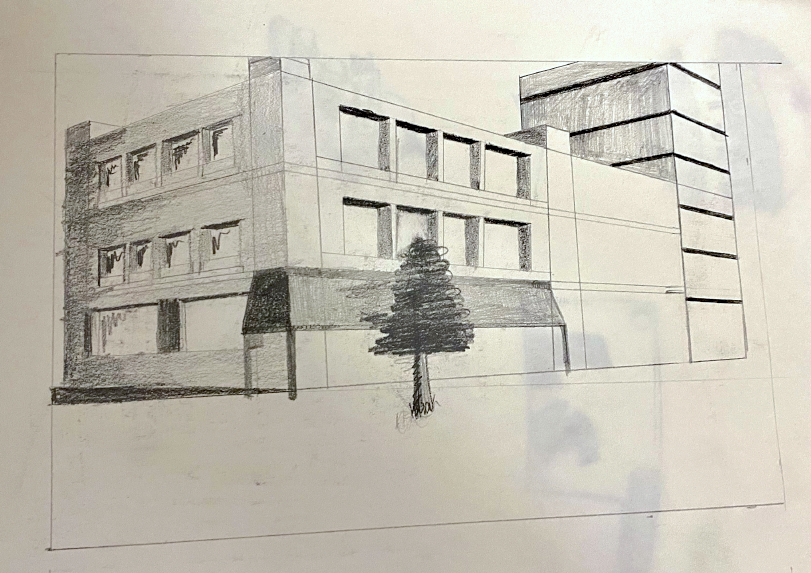

 



 



Poster made of all the major streets in downtown Minneapolis. Made in december of 2020.
Picture of a biker taken in New Orleans with a Nikon D3300.
My first personal logo. Its a combination of two "M"s. Made in december of 2020.
"Vote" postcard made for a school Assignment.
A school assignment with the task of spelling a descriptive word of ourselves, with letters we find around us.

